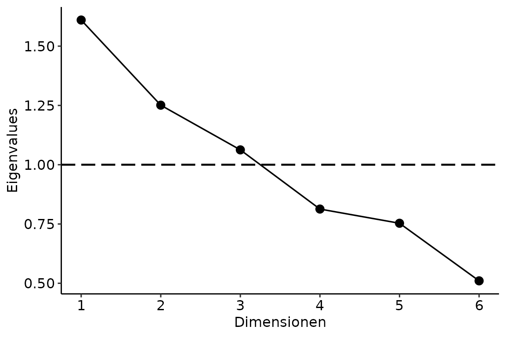
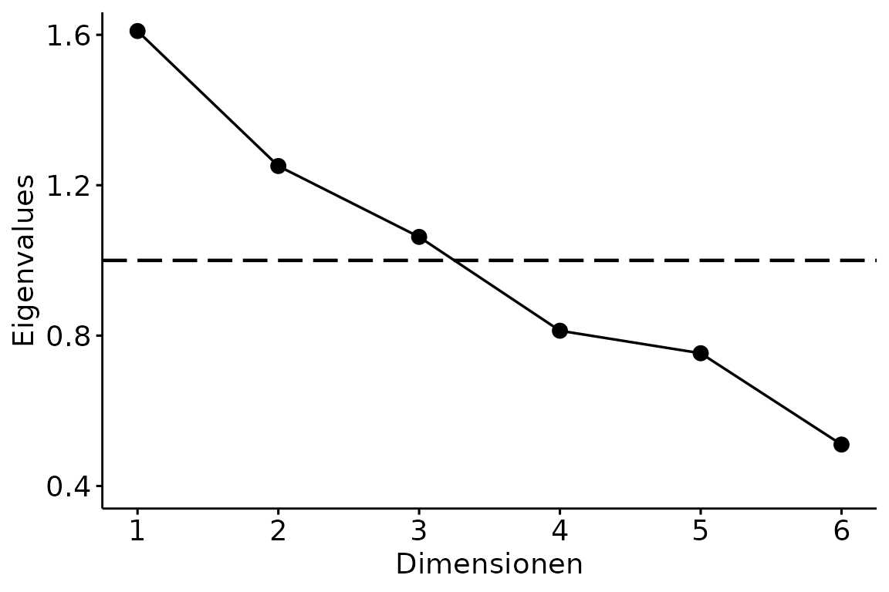

Inferenzstatistik
R für empirische Wissenschaften v1.0.2
Jan Philipp Nolte
Source:vignettes/05_Inferenzstatistik.Rmd
05_Inferenzstatistik.RmdEinführung
Viele inferenzstatistische Verfahren sind direkt in R integriert. Ein
paar Verfahren müssen wir jedoch mit externen Packages rechnen. Leider
ist weder in Base R noch in den Packages eine wirklich
konsistente, Pipe-freundliche Syntax gegeben. Außerdem sind die Outputs
unbearbeitet nicht übersichtlich lesbar. Im Folgenden schauen wir uns
diverse statistische Verfahren an und lassen uns die Ergebnisse in
schöner Form mit Funktionen des broom (engl. für Besen)
Packages wiedergeben. Aber dazu später mehr. Das Ziel dieses Kapitel ist
das Vorstellen der Funktionen mit ihren Argumenten. Es dient mehr als
Komprehendium zum Nachschlagen, allerdings sollte man den grundlegenden
Workflow verstanden und sich vor allem den Exkurs zu Dollar-Operatoren angeschaut haben.
Bevor wir in die Inferenzstatistik eintauchen, schauen wir uns zuerst
die Stichprobenplanung und Power-Berechnung an.
Stichprobenplanung und Power
Sowohl für die Stichprobenplanung als auch für die Power-Berechenung
benötigen wir das Package pwr.
Möchten wir nun zum Beispiel die optimale Stichprobengröße für eine
ANOVA mit zwei Gruppen k, einer erwarteten Effektstärke
f von .3 und einem \(\alpha\)-Niveau von 5% bei einer Power von
0.8 erhalten, benutzen wir pwr.anova.test() und setzen
ein.
pwr.anova.test(k = 2,
f = 0.3,
sig.level = 0.05,
power = 0.8)##
## Balanced one-way analysis of variance power calculation
##
## k = 2
## n = 44.58577
## f = 0.3
## sig.level = 0.05
## power = 0.8
##
## NOTE: n is number in each groupFür andere Verfahren gibt es nach dem gleichen Schema entsprechende
Funktionen (beispielsweise pwr.t.test()). Wenn man Post-Hoc
die Power ausrechnen möchte, verwendet man die selbe Funktion. Anstelle
des power Arguments schreiben wir aber diesmal die beobachtete
Stichprobengrösse n als Argument in die Funktion. Beachte,
dass f auch hier die erwartete und nicht die beobachtete
Effektstärke ist!
pwr.anova.test(k = 2,
n = 30,
f = 0.3,
sig.level = 0.05)##
## Balanced one-way analysis of variance power calculation
##
## k = 2
## n = 30
## f = 0.3
## sig.level = 0.05
## power = 0.6275046
##
## NOTE: n is number in each groupFalls die Stichprobenplanung für den gewünschten Test nicht in
pwr implementiert ist, sei an dieser Stelle auf g*Power verwiesen.
Exkurs: Dollar-Operator
Während der Inferenzstatistik lässt es sich leider nicht vermeiden,
ab und an das Dollarzeichen zu verwenden, um eine Spalte des Datensatzes
auszuwählen. Warum geht es hier nicht einfach zuvor mit
select()? Schauen wir uns mal genauer an, was die beiden
Befehle jeweils zurückgeben.
## # A tibble: 384 × 1
## Person
## <chr>
## 1 Thomas_Bayes
## 2 Thomas_Bayes
## 3 Thomas_Bayes
## 4 Thomas_Bayes
## 5 Thomas_Bayes
## 6 Thomas_Bayes
## 7 Thomas_Bayes
## 8 Thomas_Bayes
## 9 Thomas_Bayes
## 10 Thomas_Bayes
## # … with 374 more rowsWährend select() einen tibble mit der ausgewählten
Spalte zurückgibt, erhält man durch den Dollar-Operator einen Vektor.
Was genau Vektoren ausmachen, ist an dieser Stelle nicht weiter wichtig
und wird deshalb unter Extras erläutert. Um die Spalte ausgeben zu
lassen, hat man immer das selbe Schema:
datensatzName$spaltenName. Wollen wir aus dem Datensatz
tipp_wm die Spalte Person herausziehen, schreiben wir
einfach
tipp_wm$Person## [1] "Thomas_Bayes" "Thomas_Bayes" "Thomas_Bayes" "Thomas_Bayes" "Thomas_Bayes"
## [6] "Thomas_Bayes" "Thomas_Bayes" "Thomas_Bayes" "Thomas_Bayes" "Thomas_Bayes"Voraussetzungen prüfen
Um zu entscheiden, welchen Test wir verwenden dürfen, müssen wir erst die Voraussetzungen prüfen.
Normalverteilung
Am besten prüft man die Normalverteilung rein graphisch mit Q-Q Plots.
Q-Q Plot
Dafür verwenden wir erneut das Package ggpubr (siehe
Kapitel Visualisierungen).
Als erstes Argument übergeben wir den Namen des Datensatzes. In Anführungszeichen schreiben wir als zweites Argument die zu überprüfende Spalte.
ggqqplot(big_five, "Extraversion")## Warning: The following aesthetics were dropped during statistical transformation: sample
## ℹ This can happen when ggplot fails to infer the correct grouping structure in
## the data.
## ℹ Did you forget to specify a `group` aesthetic or to convert a numerical
## variable into a factor?
## The following aesthetics were dropped during statistical transformation: sample
## ℹ This can happen when ggplot fails to infer the correct grouping structure in
## the data.
## ℹ Did you forget to specify a `group` aesthetic or to convert a numerical
## variable into a factor?
Shapiro-Wilks Test
Alternativ kann auch der Shapiro-Wilks Test verwendet werden. Hier
verwenden wir zum ersten mal die Dollar-Syntax. Der Funktion übergeben
wir die Spalte Extraversion aus dem Datensatz
big_five.
shapiro.test(big_five$Extraversion)##
## Shapiro-Wilk normality test
##
## data: big_five$Extraversion
## W = 0.95715, p-value = 9.845e-06Nun sieht der p-Wert etwas seltsam aus. Bei SPSS und Stata wird unter
.001 nur noch <.001 angezeigt. In base R hingegen wird
bis 2e-16, also \(2 \times 10^{-16}\)
(0.0000000000000002) differenziert. Mit dem broom Package
gibt es keine Untergrenze.
Kolgomorov-Smirnov Test
Die zu überprüfende Spalte wird genau wie beim Shapiro Wilks Test
übergeben. Zusätzlich muss noch rnorm in Anführungszeichen
zum Testen auf Normalverteilung übergeben werden.
ks.test(big_five$Extraversion, "rnorm")##
## Asymptotic one-sample Kolmogorov-Smirnov test
##
## data: big_five$Extraversion
## D = 3.2167, p-value < 2.2e-16
## alternative hypothesis: two-sidedVarianzhomogenität
Auch beim Testen der Varianzhomogenität gibt es drei bekannte Verfahren. Ab hier werden wir versuchen, ein konsistentes Schema zum Testen zu entwickeln.
F-Test
Zuerst rufen wir den F-Test mit var.test() auf.
Angenommen wir möchten Extraversion zwischen den Geschlechtern auf
Varianzhomogenität prüfen. Getrennt werden die Variablen durch eine
sogenannte Tilde (~). Diese Schreibweise ist zwingend notwendig, wenn
man als zweite Spalte eine kategorisierende Spalte wie Geschlecht (zwei
Ausprägungsgrade) der Funktion übergibt. Um schön formatierte Ergebnisse
zu erhalten, rufen wir zuletzt tidy() auf, welches eine
Funktion aus dem bereits erwähnten broom Package ist, auf
das wir ständig zurückgreifen werden. Zuerst müssen wir also das Package
laden. Da wir wieder die Pipe verwenden, müssen wir selbstverständlich
auch das tidyverse wieder laden.
Nun können wir den F-Test rechnen.
## Multiple parameters; naming those columns num.df, den.df## # A tibble: 1 × 9
## estimate num.df den.df statistic p.value conf.low conf.high method alter…¹
## <dbl> <int> <int> <dbl> <dbl> <dbl> <dbl> <chr> <chr>
## 1 1.19 117 81 1.19 0.413 0.787 1.76 F test to… two.si…
## # … with abbreviated variable name ¹alternativeDie Spalte statistic enthält die jeweilige Teststatistik
– in dem Fall den F-Wert. Man kann den F-Test mit
alternative für einseitig oder zweiseitige Tests und mit
conf.level das \(\alpha\)
Niveau anpassen. Nun wollen wir die Varianzhomogenität zwischen
Extraversion und Neurotizismus überprüfen.
Exemplarisch seien hier die veränderbaren zusätzlichen Argumente mit
aufgelistet. Dies ist allerdings für Dich nur notwendig, wenn Du die
Argumente verändern möchtest. Weil die zweite Variable keine
kategorisierende ist, müssen wir wieder auf die Dollar-Syntax
zurückgreifen (datenName$spaltenName)
var.test(big_five$Extraversion, big_five$Neurotizismus,
alternative = "two.sided",
conf.level = 0.95) %>%
tidy()## Multiple parameters; naming those columns num.df, den.df## # A tibble: 1 × 9
## estimate num.df den.df statistic p.value conf.low conf.high method alter…¹
## <dbl> <int> <int> <dbl> <dbl> <dbl> <dbl> <chr> <chr>
## 1 0.258 199 199 0.258 3.55e-20 0.196 0.342 F test t… two.si…
## # … with abbreviated variable name ¹alternativeBartletts Test
Der Bartletts Test funktioniert wie der F-Test. Nur können hier keine zusätzlichen Argumente übergeben werden.
bartlett.test(big_five$Extraversion ~ big_five$Geschlecht) %>%
tidy()## # A tibble: 1 × 4
## statistic p.value parameter method
## <dbl> <dbl> <dbl> <chr>
## 1 0.690 0.406 1 Bartlett test of homogeneity of variancesLevene Test
Für den Levene Test benötigen wir mit car ein externes
Packages.
Die Funktion ist leider nicht konsistent benannt, da der Funktionsname von keinem Punkt getrennt und zusätzlich das zweite Wort (Test) groß geschrieben wird. Also Achtung vor Tippfehlern! Ansonsten funktioniert hier alles wie gewohnt.
leveneTest(big_five$Extraversion, big_five$Geschlecht) %>%
tidy()## Warning in leveneTest.default(big_five$Extraversion, big_five$Geschlecht):
## big_five$Geschlecht coerced to factor.## # A tibble: 1 × 4
## statistic p.value df df.residual
## <dbl> <dbl> <int> <int>
## 1 0.0000925 0.992 1 198Testen
Sind alle Voraussetzungen geprüft, geht es ans Testen.
Mittelwertsvergleich
Zwischen abhängigen und unabhängigen t-Tests sowie zwischen t-Test und Welch-Test besteht in R kaum ein syntaktischer Unterschied.
t-Test
Schauen wir uns zuerst die grundlegende Funktion
t.test() an. Dabei ändert sich nichts im Vergleich zu den
vorherigen Tests auf Varianzhomogenität. Auch hier haben wir die
Unterteilung durch die Tilde (~), wenn die zweite Spalte
kategorisierend ist und die Dollar-Syntax bei zwei intervallskalierten
Variablen.
## # A tibble: 1 × 10
## estim…¹ estim…² estim…³ stati…⁴ p.value param…⁵ conf.…⁶ conf.…⁷ method alter…⁸
## <dbl> <dbl> <dbl> <dbl> <dbl> <dbl> <dbl> <dbl> <chr> <chr>
## 1 -0.0634 3.05 3.11 -1.27 0.204 198 -0.162 0.0347 Two S… two.si…
## # … with abbreviated variable names ¹estimate, ²estimate1, ³estimate2,
## # ⁴statistic, ⁵parameter, ⁶conf.low, ⁷conf.high, ⁸alternativeDie Argumente alternative und conf.level
können auch hier geändert werden. Entscheidend für einen abhängigen oder
unabhängigen t-Test ist jedoch das paired Argument. Setze
es auf TRUE für abhängige und auf FALSE für
unabhängige Stichproben. Das Argument var.equal besagt,
dass wir von Varianzhomogenität ausgehen (also einen t-test machen).
t.test(big_five$Extraversion, big_five$Neurotizismus,
alternative = "two.sided",
conf.level = 0.95,
paired = FALSE,
var.equal = TRUE) %>%
tidy()## # A tibble: 1 × 10
## estim…¹ estim…² estim…³ stati…⁴ p.value param…⁵ conf.…⁶ conf.…⁷ method alter…⁸
## <dbl> <dbl> <dbl> <dbl> <dbl> <dbl> <dbl> <dbl> <chr> <chr>
## 1 -0.0570 3.08 3.13 -1.05 0.292 398 -0.163 0.0493 Two S… two.si…
## # … with abbreviated variable names ¹estimate, ²estimate1, ³estimate2,
## # ⁴statistic, ⁵parameter, ⁶conf.low, ⁷conf.high, ⁸alternativeWelch-Test
Bei heterogenen Varianzen muss man zum Verwenden des
nicht-parametrischen Welch-Tests lediglich das var.equal
Argument auf FALSE setzen.
t.test(big_five$Extraversion, big_five$Neurotizismus,
alternative = "two.sided",
conf.level = 0.95,
paired = FALSE,
var.equal = FALSE) %>%
tidy()## # A tibble: 1 × 10
## estim…¹ estim…² estim…³ stati…⁴ p.value param…⁵ conf.…⁶ conf.…⁷ method alter…⁸
## <dbl> <dbl> <dbl> <dbl> <dbl> <dbl> <dbl> <dbl> <chr> <chr>
## 1 -0.0570 3.08 3.13 -1.05 0.293 295. -0.163 0.0494 Welch… two.si…
## # … with abbreviated variable names ¹estimate, ²estimate1, ³estimate2,
## # ⁴statistic, ⁵parameter, ⁶conf.low, ⁷conf.high, ⁸alternativeIn der method Spalte im Output steht nun auch
Welch.
Cohens’d
Für die Effektstärke nach Cohen laden wir das Package
effsize.
Auch hier kommt die Dollar-Syntax zum Einsatz.
cohen.d(big_five$Extraversion, big_five$Neurotizismus) ##
## Cohen's d
##
## d estimate: -0.1054057 (negligible)
## 95 percent confidence interval:
## lower upper
## -0.30213641 0.09132499In Klammern hinter der Effekstärke steht sogar direkt eine Einordnung über die Größe.
Regressionsanalysen
Auch bei Regressionsanalysen ändert sich nicht viel. Wichtig ist ab
jetzt nur, dass die abhängige Variable auf der linken Seite der Tilde
(~) steht und die unabhängigen Variablen auf der rechten
Seite. Der Befehl heißt lm(), was für linear model
steht.
Einfache Lineare Regression
Eine einfache lineare Regression erhalten wir noch nach genau dem selben Schema wie zuvor.
## # A tibble: 2 × 5
## term estimate std.error statistic p.value
## <chr> <dbl> <dbl> <dbl> <dbl>
## 1 (Intercept) 2.96 0.116 25.7 7.01e-65
## 2 Neurotizismus 0.0354 0.0360 0.984 3.27e- 1Multiple Lineare Regression
Möchten wir jetzt mehrere unabhängige Variablen auf Einfluss prüfen, müssen wir diese nur mit einem Pluszeichen hinzufügen.
## # A tibble: 3 × 5
## term estimate std.error statistic p.value
## <chr> <dbl> <dbl> <dbl> <dbl>
## 1 (Intercept) 2.90 0.123 23.5 5.95e-59
## 2 Neurotizismus 0.0469 0.0367 1.28 2.03e- 1
## 3 Geschlechtm 0.0768 0.0508 1.51 1.32e- 1Wenn wir eine Interaktion zwischen Neurotizismus und Geschlecht erwarten würden, müsste man nur das Pluszeichen durch ein Multiplikationszeichen ersetzen.
## # A tibble: 4 × 5
## term estimate std.error statistic p.value
## <chr> <dbl> <dbl> <dbl> <dbl>
## 1 (Intercept) 3.04 0.167 18.2 5.39e-44
## 2 Neurotizismus 0.00374 0.0504 0.0741 9.41e- 1
## 3 Geschlechtm -0.207 0.233 -0.889 3.75e- 1
## 4 Neurotizismus:Geschlechtm 0.0917 0.0735 1.25 2.14e- 1Denke daran, dass \(e-1\) für \(\times 10^{-1}\) steht. Der p-Wert zur Interaktion wäre also \(0.214\).
Informationskriterien und \(R^2\)
Natürlich interessiert uns nicht nur der p-Wert, sondern auch die
Effektstärke \(R^2\) und die
Informationskriterien (AIC, BIC). Anstelle von tidy()
schreiben wir dafür einfach glance().
## # A tibble: 1 × 12
## r.squ…¹ adj.r…² sigma stati…³ p.value df logLik AIC BIC devia…⁴ df.re…⁵
## <dbl> <dbl> <dbl> <dbl> <dbl> <dbl> <dbl> <dbl> <dbl> <dbl> <int>
## 1 0.0240 0.00911 0.345 1.61 0.188 3 -68.9 148. 164. 23.3 196
## # … with 1 more variable: nobs <int>, and abbreviated variable names
## # ¹r.squared, ²adj.r.squared, ³statistic, ⁴deviance, ⁵df.residualLogistische Regression
Für eine logistische Regression ändert sich der Befehl zu
glm() (für Generalized linear model). Der Rest bleibt
gleich. Zum exemplarischen Rechnen, müssen wir erst das Geschlecht
numerisch kodieren.
Nun können wir wie gewohnt das Modell aufstellen.
## # A tibble: 2 × 5
## term estimate std.error statistic p.value
## <chr> <dbl> <dbl> <dbl> <dbl>
## 1 (Intercept) 0.878 0.161 5.44 0.000000154
## 2 Neurotizismus -0.149 0.0503 -2.97 0.00337Hierarchische Regression
Eine hierarchische Regression ist nichts anderes als das Vergleichen
verschiedener linearer Modelle unter Hinzufügen von Variablen. Wir
werden für eine größere Übersichtlichkeit die Modelle diesmal in
Variablen speichern. Beachte, dass wir hier kein tidy()
aufrufen, da wir die Informationskriterien der linearen Modelle später
mit glance() vergleichen wollen.
model1 <- lm(Extraversion ~ Neurotizismus, data = big_five)
model2 <- lm(Extraversion ~ Neurotizismus + Geschlecht, data = big_five)
model3 <- lm(Extraversion ~ Neurotizismus + Geschlecht + Offenheit, data = big_five) Um die Modelle nun zu vergleichen, rufen wir drei mal
glance() auf. Die Ergebnisse binden wir zeilenweise
zusammen. Wie genau rbind() funktioniert, wird im Kapitel
Extras erklärt.
## # A tibble: 3 × 12
## r.squared adj.r.squared sigma stati…¹ p.value df logLik AIC BIC devia…²
## <dbl> <dbl> <dbl> <dbl> <dbl> <dbl> <dbl> <dbl> <dbl> <dbl>
## 1 0.00486 -0.000164 0.347 0.967 0.327 1 -70.9 148. 158. 23.8
## 2 0.0163 0.00630 0.345 1.63 0.198 2 -69.7 147. 161. 23.5
## 3 0.0364 0.0216 0.343 2.47 0.0634 3 -67.7 145. 162. 23.0
## # … with 2 more variables: df.residual <int>, nobs <int>, and abbreviated
## # variable names ¹statistic, ²deviancep-Wert Korrektur
Für eine p-Wert Korrektur können wir schlichtweg eine neue Spalte an
den Ergebnisoutput mit mutate() hängen. Die korrigierten
p-Werte erhalten wir dabei durch p.adjust(). Die
verschiedenen Korrekturverfahren sind beispielsweise Holm,
Benjamini-Hochberg oder Bonferroni. Exemplarisch gehen wir von
Interaktionen von allen unabhängigen Variablen aus, um mehr p-Werte zum
Vergleichen zu erhalten.
lm(Extraversion ~ Neurotizismus * Geschlecht * Offenheit, data = big_five) %>%
tidy() %>%
mutate(p_adjusted = p.adjust(p.value, method = "BH"))## # A tibble: 8 × 6
## term estimate std.error stati…¹ p.value p_adj…²
## <chr> <dbl> <dbl> <dbl> <dbl> <dbl>
## 1 (Intercept) 5.48 1.56 3.50 5.72e-4 0.00457
## 2 Neurotizismus -0.495 0.454 -1.09 2.77e-1 0.554
## 3 Geschlechtm -0.882 2.31 -0.381 7.03e-1 0.970
## 4 Offenheit -0.744 0.466 -1.60 1.12e-1 0.448
## 5 Neurotizismus:Geschlechtm 0.0272 0.719 0.0378 9.70e-1 0.970
## 6 Neurotizismus:Offenheit 0.153 0.135 1.14 2.56e-1 0.554
## 7 Geschlechtm:Offenheit 0.215 0.689 0.312 7.55e-1 0.970
## 8 Neurotizismus:Geschlechtm:Offenheit 0.0149 0.213 0.0696 9.45e-1 0.970
## # … with abbreviated variable names ¹statistic, ²p_adjustedExkurs: Faktoren
Für Varianzanalysen müssen wir einen bisher nicht erwähnten neuen
Datentyp einführen - den Faktor. Faktoren sind Characters mit
festgelegten Ausprägungsgraden. Wir schauen uns an dieser Stelle nur an,
wie man Faktoren erstellen kann. Dabei greifen wir auf Funktionen aus
dem Kapitel der Datenvorbereitung zu. Der Datensatz für die
Varianzanalysen hat die Variablen iq,
kreativitaet, zeitpunkt, gruppe
und person_id.
## # A tibble: 90 × 5
## iq kreativitaet zeitpunkt gruppe person_id
## <dbl> <dbl> <fct> <fct> <dbl>
## 1 96.6 76.2 t1 A 1
## 2 104. 57.0 t1 B 2
## 3 117. 63.5 t1 C 3
## 4 91.9 18.6 t1 D 4
## 5 110. 73.6 t1 E 5
## 6 124. 55.5 t1 F 6
## 7 97.2 51.4 t1 A 7
## 8 104. 71.8 t1 B 8
## 9 119. 53.8 t1 C 9
## 10 92.9 42.3 t1 D 10
## # … with 80 more rowsMöchten wir nun aus der Gruppenspalte einen Faktor machen, geht dies
mit as.factor().
Angenommen Du möchtest alle Spalten mit Charactern in Faktoren
umformatieren, geht das mit mutate_if().
Für mehrere Spalten verwendet man wie gewohnt
mutate_at().
Mehr müssen wir auch gar nicht über Faktoren wissen. Ohne Faktoren können wir jedoch weder Kontraste einstellen noch den Tukey Post-Hoc Test berechnen; also am besten immer die unabhängigen Variablen bei Varianzanalysen in Faktoren umwandeln.
Varianzanalysen
Vor jeder Varianzanalyse ohne Messwiederholung laden wir die drei
Packages car, sjstats und
broom.
Außerdem müssen wir die Kontraste diagonal einstellen, da wir ansonsten verzerrte Ergebnisse erhalten können. Dafür einfach den folgenden Befehl kopieren und in der Form ausführen.
ANOVA
Die erste Zeile verändert sich syntaktisch nicht im Verlgeich zu
Regressionmodellen. Nur der Befehl ändert sich zu aov(). In
der zweiten Zeile rufen wir aus dem car Package die
Anova() Funktion auf (beachte das großgeschriebene A),
wordurch wir den Typ der Quadratsummen kontrollieren können. SPSS gibt
zum Beispiel standardmäßig Typ 3 aus, R hingegen normalerweise Typ 1.
Als letztes rufen wir aus dem sjstats Package die Funktion
anova_stats() auf, um unter anderem direkt zusätzlich die
Varianzerklärungen \(\eta^2\) zu
erhalten.
aov(iq ~ zeitpunkt + gruppe, data = repeated) %>%
Anova(type = 3) %>%
anova_stats() ## term | sumsq | meansq | df | statistic | p.value | etasq | partial.etasq | omegasq | partial.omegasq | epsilonsq | cohens.f | power
## ---------------------------------------------------------------------------------------------------------------------------------------------
## zeitpunkt | 400.918 | 200.459 | 2 | 1.031 | 0.361 | 0.022 | 0.025 | 0.001 | 0.001 | 0.001 | 0.159 | 0.231
## gruppe | 2094.995 | 418.999 | 5 | 2.156 | 0.067 | 0.114 | 0.116 | 0.060 | 0.060 | 0.061 | 0.363 | 0.717
## Residuals | 15936.917 | 194.353 | 82 | | | | | | | | |Kontraste einstellen
Schauen wir zuerst, wie die Kontraste für die Gruppenspalte aussehen.
Innerhalb von constrasts() übergeben wir die gewünschte
Spalte mit gewohnter Dollar-Syntax.
contrasts(repeated$gruppe)## [,1] [,2] [,3] [,4] [,5]
## A 1 0 0 0 0
## B 0 1 0 0 0
## C 0 0 1 0 0
## D 0 0 0 1 0
## E 0 0 0 0 1
## F -1 -1 -1 -1 -1Möchtest Du nun die Kontraste anpassen, kannst Du dies manuell
machen. Hierfür verwenden wir erneut rbind(). Dabei wird
zeilenweise unsere Matrix erstellt.
Messwiederholung
Zur ANOVA mit Messwiederholung laden wir das Package
lmerTest.
Der Befehl zum Erstellen des Modells ändert sich zu
lmer(). Ansonsten ist der einzige Unterschied das
Kontrollieren der zufälligen Effekte – hier die zufällig schwankenden
IQ-Ausprägungen zwischen den Personen. Wir kontrollieren dies mit
(1|person_id). Der Rest bleibt gleich.
## # A tibble: 3 × 4
## term statistic df p.value
## <chr> <dbl> <dbl> <dbl>
## 1 (Intercept) 3899. 1 0
## 2 zeitpunkt 2.88 2 0.237
## 3 gruppe 9.47 5 0.0918MANOVA
Zum Rechnen multivariater Varianzanalysen wählen wir zuerst die abhängigen Variablen aus und konvertieren sie zu einer Matrix. Was es genau mit Matrizen auf sich hat, wird im Kapitel Extras erklärt.
Für MANOVAs benötigen wir wieder die lm() Funktion. Das
hängt damit zusammen, dass unter jeder ANOVA eine Regression steckt und
aov() nur eine spezielle Art ist, den lm()
Befehl auszuführen. MANOVAs funktionieren nicht mit aov()!
Außerdem ändert sich Anova() zu Manova() und
wir können den Output nicht mit tidy() aufräumen.
##
## Type III MANOVA Tests: Pillai test statistic
## Df test stat approx F num Df den Df Pr(>F)
## (Intercept) 1 0.98595 2841.28 2 81 <2e-16 ***
## gruppe 5 0.15931 1.42 10 164 0.1757
## zeitpunkt 2 0.03310 0.69 4 164 0.5999
## ---
## Signif. codes: 0 '***' 0.001 '**' 0.01 '*' 0.05 '.' 0.1 ' ' 1Dabei steht Pr(>F) für den p-Wert. Für Vergleiche
innerhalb der jeweiligen abhängigen Variable, benutze
summary.aov().
lm(AV ~ gruppe + zeitpunkt, data = repeated) %>%
summary.aov() ## Response iq :
## Df Sum Sq Mean Sq F value Pr(>F)
## gruppe 5 2095.0 419.00 2.1559 0.06693 .
## zeitpunkt 2 400.9 200.46 1.0314 0.36108
## Residuals 82 15936.9 194.35
## ---
## Signif. codes: 0 '***' 0.001 '**' 0.01 '*' 0.05 '.' 0.1 ' ' 1
##
## Response kreativitaet :
## Df Sum Sq Mean Sq F value Pr(>F)
## gruppe 5 1167.0 233.40 0.7401 0.5956
## zeitpunkt 2 184.7 92.33 0.2928 0.7470
## Residuals 82 25860.2 315.37Kruskal-Wallis Test
Beim nicht-parametrischen Kruskall-Willis Test verändert sich syntaktisch nichts im Vergleich zu Regressionsmodellen und Varianzanalysen.
kruskal.test(iq ~ gruppe, data = repeated) %>%
tidy()## # A tibble: 1 × 4
## statistic p.value parameter method
## <dbl> <dbl> <int> <chr>
## 1 9.67 0.0853 5 Kruskal-Wallis rank sum testPost-Hoc Tests
Im folgenden seien zwei mögliche Post-Hoc Vergleiche vorgestellt.
TukeyHSD
Für den Test von Tukey auf Honest Significant Differences (HSD)
ändert sich nicht viel im Vergleich zur ANOVA. Nur wird nach der ANOVA
die Funktion TukeyHSD() aufgerufen und dann der Output ins
aufgeräumte Format gebracht.
## # A tibble: 171 × 7
## term contrast null.value estimate conf.low conf.high adj.p.value
## <chr> <chr> <dbl> <dbl> <dbl> <dbl> <dbl>
## 1 zeitpunkt t2-t1 0 -5.15 -13.8 3.47 0.331
## 2 zeitpunkt t3-t1 0 -2.23 -10.9 6.39 0.810
## 3 zeitpunkt t3-t2 0 2.92 -5.70 11.5 0.697
## 4 gruppe B-A 0 7.45 -7.47 22.4 0.689
## 5 gruppe C-A 0 3.34 -11.6 18.3 0.986
## 6 gruppe D-A 0 -2.54 -17.5 12.4 0.996
## 7 gruppe E-A 0 11.4 -3.51 26.3 0.233
## 8 gruppe F-A 0 -0.124 -15.0 14.8 1.00
## 9 gruppe C-B 0 -4.11 -19.0 10.8 0.966
## 10 gruppe D-B 0 -9.99 -24.9 4.93 0.375
## # … with 161 more rowsPost-Hoc-t-Tests
Hier müssen wir erneut auf den Dollar Operator zurückgreifen. Als
zusätzliches Argument kann man mit p.adjust.method() die
Korrekturmethode festlegen.
pairwise.t.test(repeated$iq, repeated$gruppe,
p.adjust.method = "none") ##
## Pairwise comparisons using t tests with pooled SD
##
## data: repeated$iq and repeated$gruppe
##
## A B C D E
## B 0.1472 - - - -
## C 0.5132 0.4224 - - -
## D 0.6192 0.0531 0.2512 - -
## E 0.0277 0.4392 0.1171 0.0075 -
## F 0.9807 0.1407 0.4978 0.6363 0.0261
##
## P value adjustment method: noneKorrelationskoeffizienten
Es gibt einen Unterschied, ob man die Korrelation zwischen zwei Variablen berechnen (mit p-Wert) oder eine Korrelationstabelle mit allen Korrelation erhalten möchte.
Produkt-Moment Korrelation nach Pearson
Die Standardeinstellung für cor.test ist die
Produkt-Moment Korrelation nach Pearson. Die Argumente
method, alternative und
conf.level sind also optional.
cor.test(big_five$Extraversion, big_five$Neurotizismus,
method = "pearson",
alternative = "two.sided",
conf.level = .95) %>%
tidy()## # A tibble: 1 × 8
## estimate statistic p.value parameter conf.low conf.high method alter…¹
## <dbl> <dbl> <dbl> <int> <dbl> <dbl> <chr> <chr>
## 1 0.0697 0.984 0.327 198 -0.0697 0.206 Pearson's pro… two.si…
## # … with abbreviated variable name ¹alternativeRangkorrelation nach Spearman
Für die Rangkorrelation nach Spearman muss man lediglich das
method Argument entsprechend anpassen (natürlich müssen die
Variablen eigentlich ordinal sein).
cor.test(big_five$Extraversion, big_five$Neurotizismus,
method = "spearman",
alternative = "two.sided",
conf.level = .95) %>%
tidy()## Warning in cor.test.default(big_five$Extraversion, big_five$Neurotizismus, :
## Cannot compute exact p-value with ties## # A tibble: 1 × 5
## estimate statistic p.value method alternative
## <dbl> <dbl> <dbl> <chr> <chr>
## 1 0.0487 1268305. 0.493 Spearman's rank correlation rho two.sidedKorrelationstabellen
Nun kann es schon mal vorkommen, dass man mehr als zwei Variablen
miteinander in einer Korrelationstabelle untersuchen möchte. Zuerst
wählen wir im repeated Datensatz alle numerischen Spalten
aus.
Dann verwenden wir die Funktion cor().
cor(repeated_num) ## iq kreativitaet person_id
## iq 1.00000000 0.01162833 -0.15539732
## kreativitaet 0.01162833 1.00000000 0.03990274
## person_id -0.15539732 0.03990274 1.00000000Kontingenztafeln
Eine Kontigenztafel erstellt man einfach mit table().
Möchten wir zum Beispiel wissen, welches der Geschlechter häufiger eine
starke Ausprägung von Extraversion mit über 3.5 haben, schreiben wir
einfach
table(big_five$Geschlecht, big_five$Extraversion > 3.5)##
## FALSE TRUE
## f 108 10
## m 76 6Schauen wir uns nun an, wie man Kontigenztafeln analysiert.
Angenommen wir haben vorherige Kontingenztafel als tbl
gespeichert.
Fisher-exact Test
Für den Fisher-Exact Test für \(2\times2\) Kontigenztafeln, müssen wir nun
lediglich unsere Kontingenztafel tbl der Funktion
fisher.test() übergeben. Auch hier bereinigen wir den
Output mit tidy().
fisher.test(tbl) %>%
tidy()## # A tibble: 1 × 6
## estimate p.value conf.low conf.high method alter…¹
## <dbl> <dbl> <dbl> <dbl> <chr> <chr>
## 1 0.853 1 0.244 2.72 Fisher's Exact Test for Count Data two.si…
## # … with abbreviated variable name ¹alternativeDie Spalte estimate im Output ist in dem Fall die Odds
ratio.
Mcnemars \(\chi^2\) Test
Das gleiche gilt für den Mcenamr Test. Hier sparen wir uns
tidy(), weil der Output ohnehin bereits schön aufgeräumt
aussieht.
mcnemar.test(tbl) ##
## McNemar's Chi-squared test with continuity correction
##
## data: tbl
## McNemar's chi-squared = 49.128, df = 1, p-value = 2.398e-12Pearsons \(\chi^2\) Test
Und auch beim asymptotischen \(\chi^2\)-Test nach Pearson läuft es nach dem selben Schema ab.
chisq.test(tbl)##
## Pearson's Chi-squared test with Yates' continuity correction
##
## data: tbl
## X-squared = 0.001011, df = 1, p-value = 0.9746Explorative Faktorenanalyse
Kommen wir nun zum letzten Thema – der explorativen Faktorenanalyse.
Dabei betrachten wir zwei Verfahren: die Principal Component Analysis
(PCA) und die Maximum Likelihood Faktorenanalyse (EFA). Zuerst wählen
wir alle numerischen Spalten aus dem big_five Datensatz aus
(alle anderen sind unbrauchbar).
Naive Hauptkomponentenanalyse
Für die naive Hauptkomponentenanalyse (PCA) muss man keine Annahmen
über die Faktorenanzahl treffen. Das einzige Argument, was man der
Funktion princomp() übergeben muss, ist der Datensatz.
fit <- princomp(num_data)Die Ladungen der Faktoren auf die Komponenten erhalten wir mit
loadings().
loadings(fit)##
## Loadings:
## Comp.1 Comp.2 Comp.3 Comp.4 Comp.5 Comp.6
## Alter 1.000
## Extraversion -0.609 0.300 0.726
## Neurotizismus 0.980 0.150 0.127
## Vertraeglichkeit -0.673 -0.502 -0.535
## Gewissenhaftigkeit 0.153 -0.391 -0.509 0.719 -0.218
## Offenheit -0.794 -0.472 0.373
##
## Comp.1 Comp.2 Comp.3 Comp.4 Comp.5 Comp.6
## SS loadings 1.000 1.000 1.000 1.000 1.000 1.000
## Proportion Var 0.167 0.167 0.167 0.167 0.167 0.167
## Cumulative Var 0.167 0.333 0.500 0.667 0.833 1.000Maximum Likelihood Faktorenanalyse
Bei einer EFA muss man die Faktorenanzahl und die Rotationsart
festlegen. Bei 5 erwarteten Faktoren und einer orthogonalen Rotation
erhält man die Faktorenanalyse mit factanal() wie folgt
fac <- factanal(num_data, factors = 2, rotation = "varimax")Möchte man im Output übersichtlich nur Werte mit 2 Nachkommastellen
in absteigender Form mit Werten größer 0.3, benutzt man
print().
##
## Call:
## factanal(x = num_data, factors = 2, rotation = "varimax")
##
## Uniquenesses:
## Alter Extraversion Neurotizismus Vertraeglichkeit
## 0.96 0.00 0.91 0.77
## Gewissenhaftigkeit Offenheit
## 0.76 0.76
##
## Loadings:
## Factor1 Factor2
## Extraversion 0.97
## Alter
## Neurotizismus
## Vertraeglichkeit 0.46
## Gewissenhaftigkeit 0.30 0.39
## Offenheit 0.49
##
## Factor1 Factor2
## SS loadings 1.26 0.58
## Proportion Var 0.21 0.10
## Cumulative Var 0.21 0.31
##
## Test of the hypothesis that 2 factors are sufficient.
## The chi square statistic is 5.13 on 4 degrees of freedom.
## The p-value is 0.274Möchte man mit den Ergebnissen weiterrechen, kann man auch hier
wieder tidy() verwenden.
## # A tibble: 6 × 4
## variable uniqueness fl1 fl2
## <chr> <dbl> <dbl> <dbl>
## 1 Alter 0.960 -0.0281 0.199
## 2 Extraversion 0.005 0.970 -0.234
## 3 Neurotizismus 0.912 0.136 0.264
## 4 Vertraeglichkeit 0.766 0.457 0.157
## 5 Gewissenhaftigkeit 0.755 0.300 0.393
## 6 Offenheit 0.763 -0.0217 0.486Das Kaiser-Maier-Olkin Kriterium erhält mit man mit der
KMO() Funktion aus dem psych Package.
KMO(num_data)## Kaiser-Meyer-Olkin factor adequacy
## Call: KMO(r = num_data)
## Overall MSA = 0.51
## MSA for each item =
## Alter Extraversion Neurotizismus Vertraeglichkeit
## 0.43 0.48 0.61 0.52
## Gewissenhaftigkeit Offenheit
## 0.60 0.45Scree Plot
Den Scree Plot erhalten wir nach Laden von rBasics mit
scree_plot(). Dabei gibt die Funktion einen ggplot
zurück.
scree_plot(num_data)## Warning: Using `size` aesthetic for lines was deprecated in ggplot2 3.4.0.
## ℹ Please use `linewidth` instead.
Wir erinnern uns, alle Graphen aus dem Package ggpubr
(siehe Kapitel Visualisierungen) basieren auf ggplot2. Das
heißt, wir können den Graphen ganz normal mit ggpar()
anpassen. Angenommen wir hätten den Graphen als plot
gespeichert, könnten wir die Parameter einfach anpassen mit
